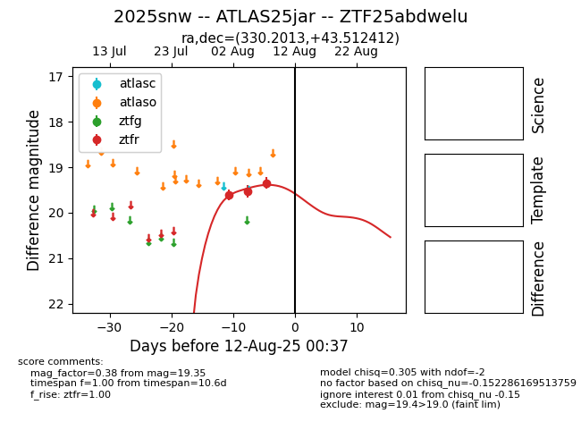

Target 2025snw at 2025-08-12 05:09, see:
FINK: fink-portal.org/2025snw
Lasair: lasair-ztf.lsst.ac.uk/objects/2025snw
ALeRCE: alerce.online/object/2025snw
TNS: wis-tns.org/object/2025snw
YSE: ziggy.ucolick.org/yse/transient_detail/2025snw
alt names
ZTF25abdwelu (ztf,fink)
2025snw (tns,yse)
ATLAS25jar (atlas)
coordinates:
equatorial (ra, dec) = (330.2013,+43.51241)
galactic (l, b) = (93.0707,-9.24834)
photometry
last ztfr=19.35
3 ztfr detections
